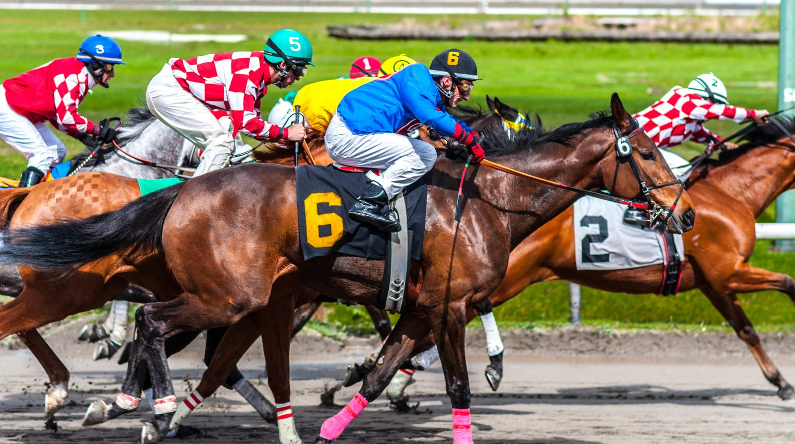

Once de diecisiete: Aidan O'Brien copa el Futurity Trophy de Doncaster
Aidan O'Brien tiene 11 de los 17 caballos que siguen inscritos en el William Hill Futurity Trophy del sábado en Doncaster, el último Grupo 1 del año en Gran Bretaña.

La carrera reparte 275.000 libras, y el dinero cuenta: O'Brien persigue otro título de preparadores británico. Su perseguidor, Andrew Balding, está a más de 80.000 libras y solo tiene un caballo en la prueba, Gran Dia, que ganó con autoridad en Salisbury.
El preparador de Ballydoyle puede elegir entre Albany County, Capability Brown, Choctaw Nation, Drumbeat, Giant Sequoia, Haffner, Man's Best Friend, Sergei Diaghilev, Shakespeare, Wall Street y Noble Exhibit. Este último es el favorito en las apuestas anticipadas.
Fuera del bloque irlandés, Charlie Appleby tiene a First Law y Al Hudaiba, y Karl Burke a Burning Up. William Muir aspira a dar la sorpresa con Breacher, un potro de dos años hijo de Cracksman al que tiene en alta estima.
Breacher fue tercero en su última salida, el Champagne Stakes (Grupo 2) en el propio Doncaster. Ganó Desert Castle y Sergei Diaghilev fue segundo. Muir, que prepara al potro junto a Chris Grassick, confirmó la participación: «Está fantástico, en muy buena forma, y va a correr el Futurity Trophy en Doncaster. No ha hecho nada mal y estaba pidiendo a gritos la milla. Desde antes incluso de empezar la estaba pidiendo».
El preparador mide a su potro con lo que hicieron después sus rivales. Desert Castle le parece «un caballo tan bueno como cualquiera que haya visto en años», así que el ganador que lo superó en Newmarket, Darkness Falls, «debe de ser excepcional». Sergei Diaghilev, por su parte, fue segundo por muy poco en el Autumn Stakes.
«Queríamos más distancia. Con una milla habríamos estado más cerca», explicó Muir. «No habríamos ganado al vencedor, creo que es excepcional, pero sí habríamos estado más cerca del segundo si hubiera sido sobre una milla».
Fichas: Giant (Chi) (caballo)
Por Martín Larrañeta